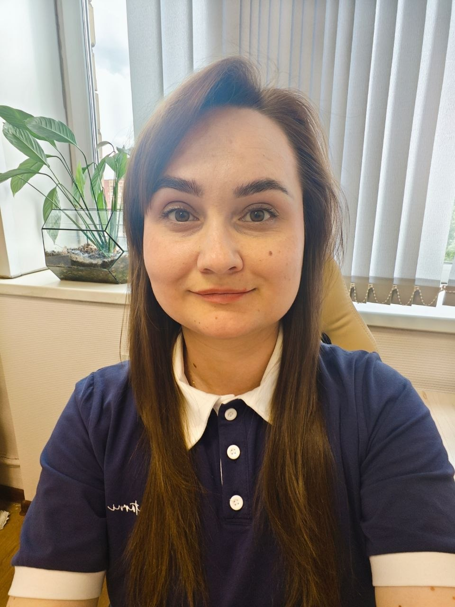

Государственный гражданский служащий
Делопроизводство • Обращения граждан • Помощник руководителя • Руководитель аппарата • Организационный отдел
Профессиональный управленец с 12-летним опытом работы в государственном секторе.
Специализируюсь на выстраивании стабильных рабочих процессов в условиях многозадачности и дефицита ресурсов.
Мой подход: сочетание строгого соблюдения регламентов с поиском оптимальных решений для команды.
Обладаю опытом в коммерческом секторе (продажи), что дает мне преимущество в виде высокой клиентоориентированности и нацеленности на конкретный результат.
Период: 10.2022г. — настоящее время
Должность: Главный специалист-эксперт отдела государственной службы, кадров и делопроизводства.
Достижения:
Период: 01.2020г. — 07.2022г.
Должность: Менеджер отдела продаж.
Период: 06.2008 — 07.2017
Должности: Ведущий специалист по делам молодежи, специалист по обращениям граждан, начальник организационного отдела.
Гражданство: Российская Федерация
Место проживания: г. Королёв, Московская область
Дата рождения: 11 марта 1988 г.
Возраст: 38 лет
Семейное положение: Замужем
Водительские права: Категория B
Образование: Высшее
ГОУ ВПО «Саратовская государственная академия права»
Квалификация: Юрист
Год окончания: 2010